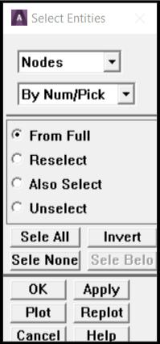
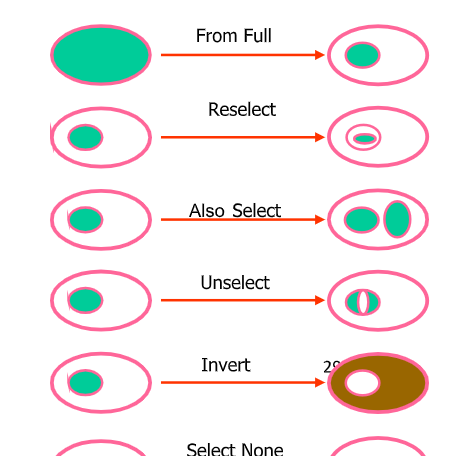

2.7.1 Selecting Selecting (Fig. 2.17) is an important and fundamental concept in ANSYS. Selected entities are the active entities. All operations (including Solving) are performed on the selected set. In many operations items are selected on the fly; ANSYS prompts for what volumes to mesh for example, analyst picks them with the mouse, and ANSYS does the meshing. However there are many times when it is necessary to select things in more sophisticated ways. Also, in an ANSYS input file or batch file things can not be selected with the mouse! Examples where this would be useful:
There are many different areas at Z = 0 analyst wants to constrain. He selects them all one by one when applying the constraint, or selects ‘By Location’ beforehand, then says ‘Pick All’ in the picking dialog.
There is a structure with many fastener holes that analyst wants to constrain. Again, he could select them all one by one when applying the constraint, or select lines ‘By Length/Radius’, type in the radius of the holes to select all of them in one shot, then ‘Pick All’ in the picking dialog when applying the constraint.

Fig. 2.17After working with the selected set, use Utility Menu > Select > Everything to make the whole model active again. Select Entities Dialog Box Terminology (Fig. 2.18): From Full: Select from the entire set of entities in the model. Reselect: Select a subset from the currently selected entities. Also Select: Select in addition to (from the whole model) the set analyst has currently selected. Unselect: Remove items from the selection set. Select All: This is not the same as Utility Menu > Select > Everything. This selects all of whatever entity analyst has specified at the top of the dialog. Invert: Reverses the selected and unselected entities (just the entities specified at the top of the dialog). OK: This does the select operation (or brings up a picker dialog so that analyst can pick with the mouse) and then dismisses the dialog. Apply: This does the operation but keeps the dialog box. Typically use this so the dialog stays active. Replot: Replots whatever is active in the graphics window. Plot: Plots only the entity specified at the top of the dialog.

Fig. 2.182.7.2 Organizing the Model using Components If a group of entities are selected and it might be necessary to use that selection set again, create a component out of it. Components are groups of entities but hold only one kind of entity at a time. Components can themselves be grouped into Assemblies, so this is the way to group different types of entities together. Use Utility Menu > Select > Comp/Assembly > Create Component… to create a component. The Component Manager (Fig. 2.19) makes it very easy to manage and manipulate groups and select/plot what analyst wants to see to the screen. This is found under Utility Menu > Select > Component Manager.